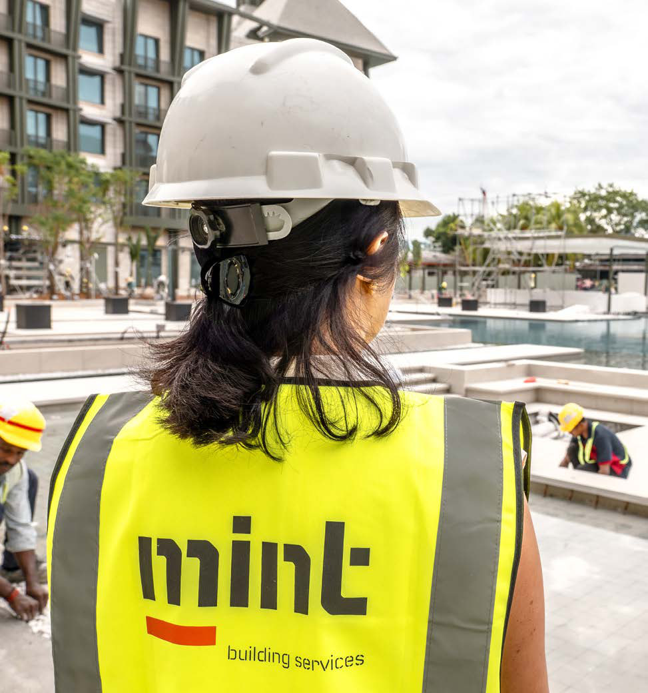

Jaymee Recto did not fall for economics in a lecture theatre. “To be honest, I don’t like economics,” she says with a laugh. Trained as a civil engineer at Mapúa, she came up in a system without a formal QS track. “You can’t price what you don’t know how to design and build.”
After graduating she tried estimating, which felt too removed from site, then QA/QC, which was heavy on administration. A chance to work in Singapore introduced her to quantity surveying.
She was, by her own admission, “clueless about what a QS was then,” but the role put her where she wanted to be: on site. Watching the work, valuing variations from real conditions, and tracking time against money made sense to her.
